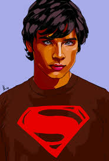

Na verdade, os óculos não são suficientes para esconder a identidade de Superman. A razão pela qual Clark Kent pode manter sua identidade em segredo é que ele age de maneira diferente quando está como Superman. Ele fala, anda e se comporta de maneira diferente, o que ajuda a criar uma distinção clara entre suas duas identidades. Além disso, a maioria das pessoas não espera que um super-herói esteja tão perto delas no dia a dia, então elas não fazem a conexão imediata entre Clark Kent e Superman. Portanto, embora os óculos sejam um elemento visual importante, eles não são o único fator que contribui para a capacidade de Clark Kent de manter sua identidade em segredo.
